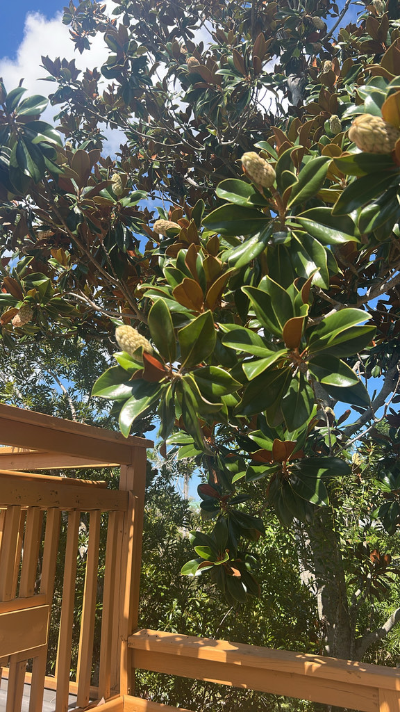

- Each Southern Magnolia flower runs a two-day beetle trap. It opens in the female phase on day one, luring beetles in with fragrance and pollen. At nightfall the tepals fold shut, enclosing the beetles overnight; by morning the anthers have dusted them in fresh pollen and the flower reopens to release them — ready to cross-pollinate the next bloom they find.
- Magnolias belong to an ancient lineage of flowering plants stretching back more than 100 million years, to the Cretaceous. Their large, open, pollen-rich flowers retain characteristics associated with beetle pollination — a glimpse of a floral strategy that predates modern bee-dominated ecosystems.
- Flip over a mature leaf. The glossy dark-green top gives way to a striking rusty-brown, velvety underside. This dense covering of tiny hairs helps reduce water loss and may discourage leaf-chewing insects — and it is one of the easiest ways to recognize Southern Magnolia.
- Before you plant one, know what you are signing up for. The large, waxy leaves decompose very slowly and pile up in a heavy spring flush each year. Surface roots spread wide and dense, making turfgrass underneath nearly impossible to sustain. Southern Magnolia rewards the gardener who gives it space and lets it be a tree — not a lawn ornament.
Southern Magnolia is native along the southeastern coastal plain from Virginia and North Carolina south into central Florida, and westward through the Gulf Coast states to eastern Texas.
In Florida it occurs naturally in hardwood hammocks, along ravines and stream margins, on mesic upland slopes, and at the edges of wooded floodplains — typically in spots that stay moist and are sheltered enough to escape regular fire.
Southern Magnolia is a Florida native, but its natural Florida range is concentrated mainly in the northern and north-central part of the state. Around Bradenton, it is best understood as a native southeastern tree that has been widely planted beyond the core of its natural Florida range — and one that performs well here.
- The genus name Magnolia honors Pierre Magnol, a seventeenth-century French botanist who pioneered the idea of plant families — grouping plants by shared traits rather than listing them alphabetically. The species name grandiflora is straightforward Latin: grandis ('big') plus flora ('flower'). For once, a botanical name that needs no translation.
- Magnoliaceae belongs to an ancient lineage of flowering plants. Fossil evidence shows magnolia-like plants reaching deep into the Cretaceous, more than 100 million years ago. That ancient origin shaped the flower's entire design — open, bowl-shaped, richly scented, and built around pollen rewards that attract beetles rather than the nectar tubes favored by many bee-pollinated flowers.
- Mark Catesby brought the first Magnolia grandiflora to Britain in 1726, and it soon became a prized ornamental in European estates and gardens.
- Southern Magnolia is most abundant in moist, relatively fire-sheltered forests. Young trees are vulnerable to fire, while established trees can be considerably more fire-resistant and may resprout vigorously after damage. This is a useful contrast to many other Florida natives that tolerate or even require periodic fire — 'native' does not mean 'adapted to every Florida ecosystem.'
- In the landscape it is long-lived, drought-tolerant once established, and moderately salt-tolerant — traits that suit it well to Florida's Gulf Coast gardens. Few American trees are as closely associated with the culture and landscapes of the Southeast: it is the state tree of Mississippi and has been planted far beyond its natural range for generations.
The flowers draw in beetles — several species — that arrive for pollen and other floral tissues and end up cross-pollinating the tree in the process. The blooms are powerfully fragrant, with a citrus-sweet character driven by compounds including geraniol and ocimene that signal to pollinators from a distance. Bees also visit, and recent research suggests they contribute to pollination as well.
When the woody cones split open in fall, they reveal bright red seeds dangling on silky threads. Squirrels, opossums, quail, wild turkeys, and an assortment of birds take the seeds, making this an important fall food source.
The dense, year-round evergreen canopy provides nesting shelter and cover for birds and small mammals, while the pollen-rich flowers and fall seeds provide seasonal food resources. For butterfly gardeners, Southern Magnolia is better understood as a source of structure, pollen, seeds, and shelter than as a caterpillar host plant.
Southern Magnolia reproduces by seed and, in cultivation, by semi-hardwood cuttings taken in summer. Good seed crops are produced most years once the tree reaches maturity; peak production typically does not arrive until around age 25. Seeds are dispersed primarily by birds and mammals.
Enormous, creamy white, cup-shaped flowers — up to roughly 12 inches across — appear singly at branch tips from late spring through summer, with scattered blooms possible into fall.
Each flower is protogynous: the female reproductive structures become receptive before the pollen-producing anthers release pollen. This separation in timing encourages pollen to move between flowers rather than being deposited on the same flower. Beetles visiting for pollen can move between flowers during these different phases.
The fragrance is heavy and citrus-sweet, driven chiefly by geraniol and ocimene, and is strongest in the midday heat.
A cone-like, woody, fuzzy brown aggregate fruit follows each flower, maturing in fall. When ripe it splits open to reveal bright rose-red seeds that dangle from the cone on silky threads. Each seed is wrapped in a fleshy, oily red covering called an aril that makes it attractive to birds and small mammals.
Large, leathery, and elliptic — typically 5 to 10 inches long. The upper surface is glossy dark green; the underside is covered in a dense, distinctive rust-colored to tawny fuzz (indumentum) that reduces water loss and deters leaf-chewing insects.
Do not confuse Southern Magnolia with Sweetbay Magnolia (Magnolia virginiana): Southern Magnolia has much thicker, tougher, glossy leaves with a distinctly rusty-brown fuzzy underside, while Sweetbay has thinner, more delicate leaves.
Leaves are arranged alternately and shed gradually as new foliage emerges, keeping the tree evergreen year-round; the older leaves that fall in spring can create a substantial carpet of large, slow-to-decompose litter.
Typically single-trunked and straight through the center of the crown. Bark is gray and smooth on young trees, developing scaly plates with age. On large specimens the trunk can exceed three feet in diameter. Lower branches may droop to the ground on open-grown trees.
Try the leaf test: find a mature leaf and look at both sides. The top should be thick, glossy, and dark green; turn it over and look for the distinctive rusty-brown fuzz beneath — that indumentum is one of the tree's best field marks, and it serves a real purpose, reducing water loss and deterring leaf-chewing insects.
In late spring and summer, look for the massive white flowers at the branch tips; they are among the largest blooms of any North American native tree. In fall, scan the canopy for the fuzzy brown cones splitting open to show dangling red seeds. The overall crown shape is a broad, dense pyramid — open-grown trees here often have branches sweeping close to the ground.
Southern Magnolia poses no known toxicity to people, dogs, cats, or horses. The petals are genuinely edible — eaten fresh or pickled, they carry a strong, spicy, ginger-meets-cardamom flavor — but the seeds and woody cone parts are unpalatable and should not be eaten. Otherwise harmless.
Many cultivars of Magnolia grandiflora are available in the nursery trade, offering variation in mature size, crown density, and cold hardiness.
Popular selections include 'Little Gem' (a compact, more slowly growing form) and 'Bracken's Brown Beauty.' The Florida Native Plant Society notes that 'Little Gem' originates from North Carolina stock, and suitability for Florida landscapes will vary by cultivar — for native provenance, source from a Florida native-plant nursery.
Southern Magnolia is listed as USDA Hardiness Zones 7A through 10A by UF/IFAS, which comfortably covers Bradenton (Zone 10A). It is the state tree of Mississippi.

- © Denise Sosa (CC-BY-NC), via iNaturalist